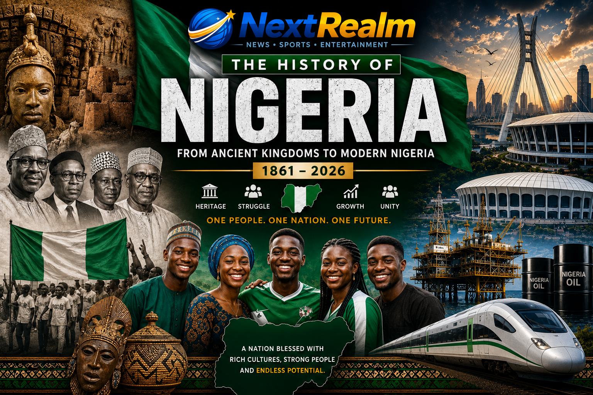

Published: 27 July 2026
Category: History & Politics

This special report explores the complete history of Nigeria—from its ancient civilizations and British colonization to independence, military rule, democracy, and present-day Nigeria.
Before the country became known as Nigeria, there was no single nation bearing that name. The territory was made up of several independent kingdoms, empires, and communities.
Some of the most powerful civilizations included:
These kingdoms had their own rulers, armies, trade systems, and cultures long before British colonial rule.
The name "Nigeria" was suggested in 1897 by Flora Shaw, a British journalist and writer who worked for The Times newspaper in London.
At the time, the land that is now Nigeria consisted of several British protectorates and indigenous kingdoms. There was no single name that represented all the territories.
Flora Shaw proposed the name "Nigeria" in an article she wrote for The Times newspaper. She derived the name from the River Niger, which is one of the most important rivers in West Africa and flows through the country.
The name "Nigeria" literally means "the area around the River Niger."
Years later, Flora Shaw married Sir Frederick Lugard (later Lord Lugard), the British colonial administrator who played a major role in the amalgamation of Northern and Southern Nigeria in 1914.
Nigeria is named after the River Niger, which runs through the western part of the country and has been an important source of transportation, trade, and civilization for centuries.
British colonial officials adopted the name because it was geographically suitable for describing the vast territories that were eventually brought together under British colonial administration.
Before the name Nigeria became official, the various territories were administered separately under different colonial arrangements and indigenous rulers.
The name officially became widely recognized after the amalgamation of the Northern and Southern Protectorates in 1914.
One of the most important events in Nigerian history was the amalgamation of the Northern and Southern Protectorates by the British colonial government.
The amalgamation officially took place on 1 January 1914.
The process was carried out by Lord Frederick Lugard, who served as the Governor-General of Nigeria under British colonial rule.
Before 1914, the British administered Northern Nigeria and Southern Nigeria as separate territories with different administrative systems and budgets.
The British government decided to merge both territories into a single colony known as Nigeria.
The main reason for the amalgamation was economic and administrative convenience for the British colonial government.
Northern Nigeria was not generating enough revenue to cover its administrative expenses, while Southern Nigeria was producing significant income from trade, customs duties, and agricultural exports.
By merging both regions, the British could use revenue generated in the South to support administration in the North.
The amalgamation also allowed the British to manage the territory more efficiently under a single colonial government.
Many historians believe that the amalgamation primarily served British colonial interests rather than the interests of the indigenous peoples living in the region.
Following the amalgamation of 1914, Nigerians began advocating for self-governance and independence from British colonial rule. Political movements, newspapers, and nationalist organizations played major roles in shaping the country's future.
For decades, Nigerian leaders campaigned tirelessly for political reforms, equal representation, and ultimately independence from British rule.
Their efforts laid the foundation for the modern Nigerian state and inspired generations of political leaders and citizens.
These leaders, despite their political differences, contributed significantly to Nigeria's independence and democratic development.
On 31 March 1953, Chief Anthony Enahoro made history by moving the motion for Nigeria's independence in the House of Representatives.
His proposal called for Nigeria to become an independent nation in 1956. Although political disagreements delayed independence, his courageous action marked a turning point in Nigeria's struggle for self-governance.
Today, Chief Anthony Enahoro is celebrated as one of the heroes of Nigeria's independence movement.
Nigeria officially gained independence from British colonial rule on 1 October 1960, making it one of Africa's most significant political milestones of the twentieth century.
After decades of nationalist struggles and constitutional reforms, Nigeria became a sovereign nation and assumed full responsibility for its internal affairs.
The country's independence was celebrated across all regions of Nigeria with ceremonies, parades, and public gatherings.
At independence, Nigeria adopted a parliamentary system of government similar to that of the United Kingdom.
At midnight on 1 October 1960, the British Union Jack was lowered, marking the end of British colonial rule in Nigeria.
The green-white-green Nigerian flag was proudly raised as Nigerians celebrated the birth of their independent nation.
Independence celebrations were attended by Nigerian political leaders, foreign dignitaries, and representatives of the British government.
The event symbolized hope, unity, and a brighter future for Africa's most populous nation.
Since independence in 1960, Nigeria has been governed by both civilian and military leaders. The country has experienced parliamentary democracy, military rule, and presidential democracy.
Nigeria has produced several Heads of State and Presidents who have shaped the nation's political, economic, and social development.
Nigeria has experienced several military coups since independence in 1960. These coups significantly influenced the country's political development and democratic institutions.
The first military coup took place on 15 January 1966 and resulted in the assassination of several prominent political leaders, including Prime Minister Sir Abubakar Tafawa Balewa and Premier Sir Ahmadu Bello.
Subsequent coups brought various military leaders to power and shaped Nigeria's political landscape for several decades.
Military rule in Nigeria lasted for approximately twenty-nine years before democratic governance was permanently restored in 1999.
The Nigerian Civil War, popularly known as the Biafra War, was one of the most significant and tragic events in Nigeria's history.
The war officially began on 6 July 1967 and ended on 15 January 1970.
The conflict arose from political instability, ethnic tensions, military coups, and disagreements over the structure and future of Nigeria following independence.
The war was fought between the Federal Military Government of Nigeria and the Republic of Biafra, which was declared by Lieutenant Colonel Chukwuemeka Odumegwu Ojukwu on 30 May 1967.
Several factors contributed to the outbreak of the Nigerian Civil War, including political crises following the military coups of 1966, ethnic violence, disagreements over regional autonomy, and concerns over the safety and political future of various ethnic groups within Nigeria.
The declaration of the Republic of Biafra in May 1967 led the Federal Military Government under General Yakubu Gowon to launch military operations aimed at preserving Nigeria's territorial unity.
The war lasted for two years, six months, and one week, making it one of the deadliest conflicts in post-colonial Africa.
The Nigerian Civil War officially ended on 15 January 1970 when Biafran forces surrendered to the Federal Military Government.
Following the end of the conflict, General Yakubu Gowon declared a policy of "No Victor, No Vanquished," emphasizing national reconciliation and the rebuilding of the country.
The Federal Government also announced programmes aimed at Reconstruction, Rehabilitation, and Reconciliation to promote national unity after the war.
At independence in 1960, Nigeria was divided into three major regions:
In 1963, the Mid-Western Region was created, increasing the number of regions to four.
As Nigeria grew politically and economically, successive governments introduced state creation exercises to improve administration, promote development, and ensure fair representation among the country's diverse ethnic and cultural groups.
The creation of states remains one of the most important political developments in Nigeria's history.
Nigeria's states were created in phases by various military governments.
Today, Nigeria consists of 36 states and the Federal Capital Territory (FCT), Abuja.
Nigeria currently has 36 states and one Federal Capital Territory (FCT), Abuja.
Federal Capital Territory (FCT) - Abuja.
Nigeria has a total of 774 Local Government Areas (LGAs). They represent the third tier of government after the Federal and State Governments.
Local Government Areas are responsible for grassroots administration and provide essential services within their respective communities.
These geopolitical zones are used for political representation, economic planning, and national development initiatives.
Nigeria has several important national symbols that represent the country's unity, values, and identity.
Nigeria is one of Africa's most resource-rich countries. It possesses numerous natural resources that contribute significantly to its economy.
Nigeria is often referred to as the "Giant of Africa" because of its population, economy, and regional influence.
Several Nigerian leaders are remembered for their contributions to nation-building, economic reforms, democratic development, and national unity.
Throughout Nigeria's history, some leaders have remained highly controversial. While many introduced important reforms and contributed significantly to the country's development, their administrations also faced major criticisms and political controversies.
Popularly Known As: IBB
President Bola Ahmed Tinubu is the 16th President of the Federal Republic of Nigeria and assumed office on 29 May 2023.
His administration has introduced major economic reforms aimed at restructuring Nigeria's economy and improving long-term fiscal sustainability.
Supporters argue that many of the reforms are necessary for Nigeria's long-term economic growth, while critics have raised concerns about their immediate impact on citizens. The historical assessment of the administration will continue to evolve over time.
Nigeria remains one of the most influential countries in Africa and has made remarkable contributions to politics, economics, entertainment, sports, peacekeeping, and international diplomacy.
Nigeria's history is one of resilience, diversity, sacrifice, and extraordinary achievements. From ancient kingdoms and colonial rule to independence, civil war, military governments, and democratic progress, Nigeria continues to evolve as one of Africa's most influential nations.
Despite its challenges, Nigeria remains a country filled with immense potential, rich cultural heritage, and remarkable people whose contributions continue to shape Africa and the world.
Understanding Nigeria's past is essential to building its future.
© NextRealm News & History | 2026